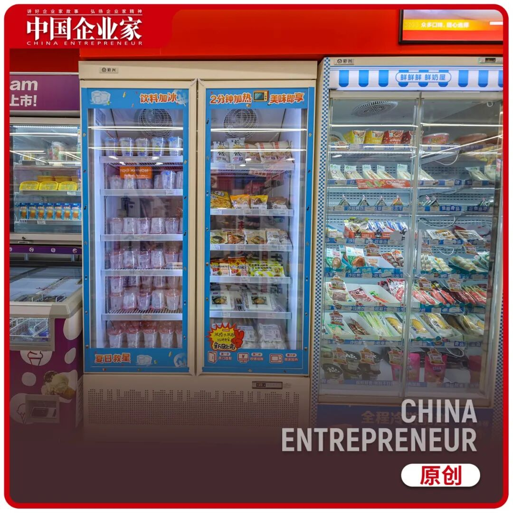
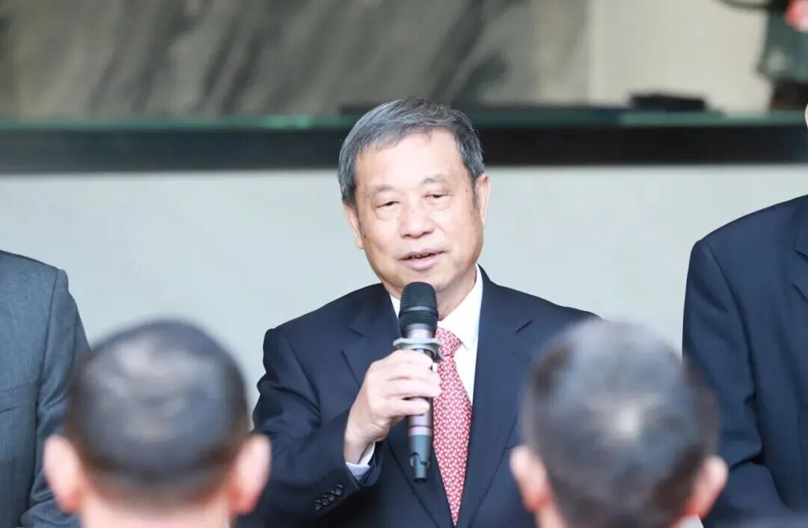
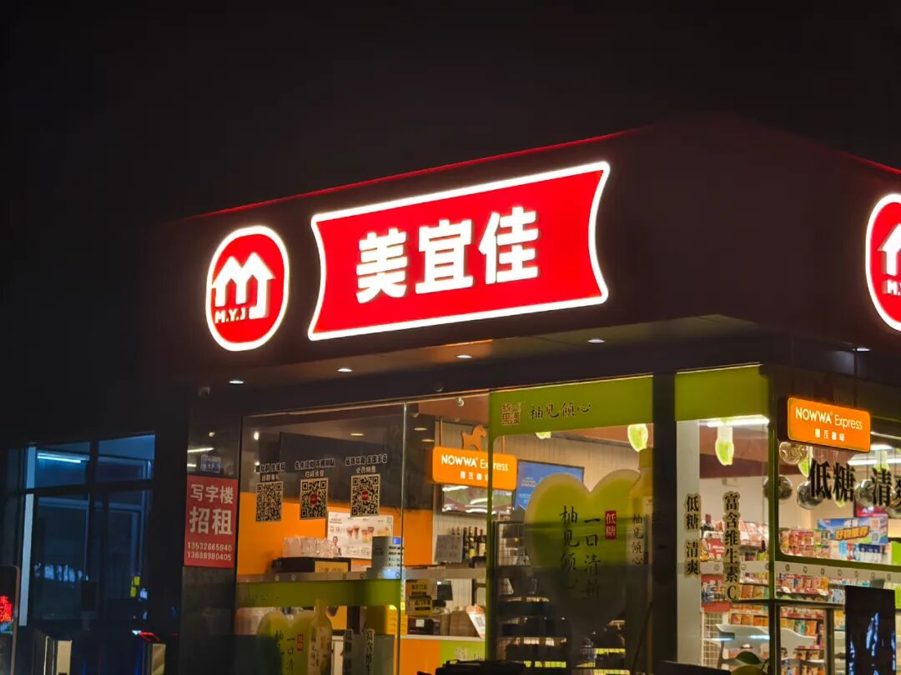
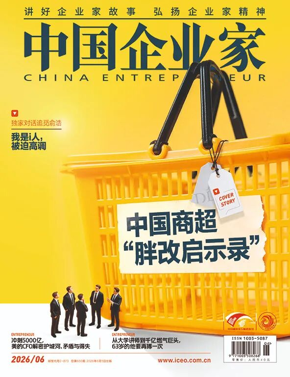
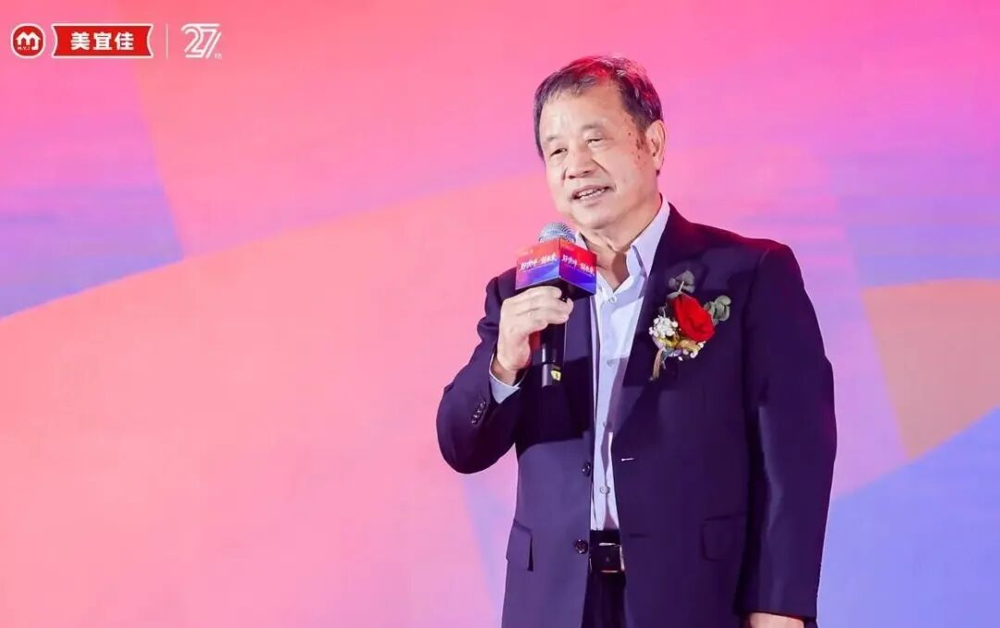
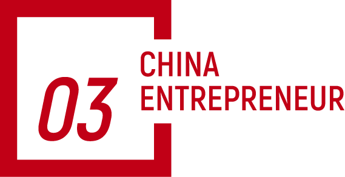
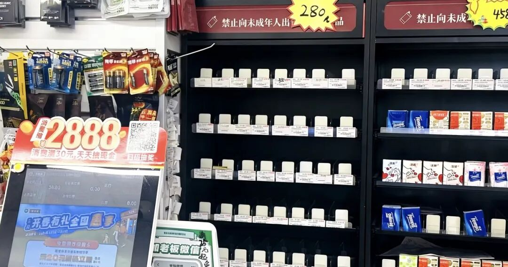

🏪 从东莞走出来的“中国便利店之王”，撞上规模的墙
Dongguan Convenience Store King Hits the Scale Wall



文｜《中国企业家》记者 李欣
中国“便利店之王”，频频陷入翻车争议controversy[ˈkɑntrəvɜrsi] n. 争议。
近日，美宜佳多家门店被曝销售过期expired[ɪkˈspaɪrd] adj. 过期的食品。事实fact[fækt] n. 事实上，这已是近半年来，美宜佳第二次翻车。今年3月14日，多家美宜佳便利店门店被曝光expose[ɪkˈspoʊz] v. 曝光存在涉嫌出售假烟的情况。与此同时，在黑猫投诉complaint[kəmˈpleɪnt] n. 投诉平台上，近日也出现了不少针对美宜佳出售过期食品的投诉。
2025年7月，美宜佳官宣announce[əˈnaʊns] v. 官方宣布门店数破4万。据中国连锁经营协会（CCFA）2025年6月发布的数据data[ˈdeɪtə] n. 数据，美宜佳稳坐全国便利店门店数第一，其2024年销售规模达558.88亿元。而第二名易捷便利店只有2.86万家。
可曾被视为国民便利店的美宜佳，如今却屡因产品问题导致口碑reputation[ˌrɛpjəˈteɪʃən] n. 口碑；声誉崩塌——它到底怎么了？
要回答这个问题，还得回到叶志坚创立found[faʊnd] v. 创立美宜佳的那个起点。
资料显示indicate[ˈɪndɪkeɪt] v. 显示；表明，叶志坚1951年生于广东东莞。初中毕业graduate[ˈɡrædʒuɪt] v. 毕业，他便被时代推着上山下乡，种过田，养过鸭子，当过民办老师。1972年，国家招工，他进了县食品food[fud] n. 食品公司。此后，从基层员工到企业主管，从食品公司到糖酒集团，叶志坚一直坚持在零售业深耕cultivate[ˈkʌltɪveɪt] v. 深耕；潜心从事。
1997年，叶志坚干到了东莞市糖酒公司管理manage[ˈmænɪdʒ] v. 管理层的位置，他做出了一个判断：零售超市很快将朝着两个方向发展，要么像沃尔玛、家乐福那样做“大”，满足消费者的一站式购物需求；要么像7-11便利convenience[kənˈviniəns] n. 便利店那样做“小”，满足消费者快速便利的购物需要。

叶志坚 来源：美宜佳官方公众号
最终，他选择做“小”，于1997年创办establish[ɪˈstæblɪʃ] v. 创办了美宜佳便利店。从第一天起，叶志坚就为美宜佳定下了“特许加盟”的模式model[ˈmɑdəl] n. 模式，从此这个本土便利店便避开一二线商圈，一头扎进下沉市场。此后的29年里，美宜佳凭此模式，成长为拥有超4万家门店的行业巨擘giant[ˈdʒaɪənt] n. 巨擘；巨头。它的“开店能力”，一度被业内视为模范与标杆benchmark[ˈbɛntʃmɑrk] n. 标杆；基准。
公开资料显示，当地同行称叶志坚为“东莞零售retail[ˈriteɪl] n. 零售业教父”。不只因为美宜佳规模最大，更因为东莞便利店的另两大品牌都与他渊源颇深——天福便利店的创始人founder[ˈfaʊndər] n. 创始人欧阳华金曾是他的秘书，上好便利店的创始人周星轲曾是美宜佳第一代加盟商。
叶志坚所选择的“弱管控、强支持”模式，让美宜佳跑赢了所有对手，但总部主动让渡对单店的控制力，门店在自负盈亏的压力下，将品控风险risk[rɪsk] n. 风险当作可赌的筹码，这两者从一开始就为后来的失控埋了伏笔。
于是，当门店从几百家膨胀expand[ɪkˈspænd] v. 膨胀；扩张到四万家，密度大到两家店隔街相望、抢同一拨客人时，规模就把从一开始就存在的裂缝撕得越来越大，直到摊开给所有人看。
换言之，规模只是把矛盾contradiction[ˌkɑntrəˈdɪkʃən] n. 矛盾放大了。
如今，接连几番风波之后，美宜佳终于想踩下规模化的刹车，从以松散管理换规模的策略strategy[ˈstrætədʒi] n. 策略，转向关注单店质量与加盟商收益。只是，对于一个靠“松”长到四万家店的体系system[ˈsɪstəm] n. 体系，要重新立起“紧”的新规矩，谈何容易？

叶志坚在创立美宜佳便利店之前，就已经创造性地创办了本土化连锁chain[tʃeɪn] n. 连锁的美佳超市，这个超市一度被业内称为“开启了国内连锁经营的先河”。到了1996年，美佳超市进入鼎盛时期period[ˈpɪriəd] n. 时期，四五十家门店铺满了东莞大部分镇区。
但仅仅一年后，随着以沃尔玛为代表的世界知名外资连锁大卖场蜂拥进入中国，以及更多本土大卖场的崛起，广东乃至东莞商超竞争competition[ˌkɑmpəˈtɪʃən] n. 竞争日益激烈，美佳超市300到500平方米的面积，优势不再。
到了非变不可的时候了。身为东莞糖酒集团总经理，叶志坚做了一个大胆的转型transform[trænsˈfɔrm] v. 转型决定：放弃中型超市，创办美宜佳便利店，换一种活法。于是，此后，东莞糖酒集团逐步将美佳并入美宜佳，步入了以美宜佳便利店为核心core[kɔr] n. 核心业务的发展时代。
美宜佳便利店有限公司成立后，叶志坚负责战略定调，张国衡出任assume[əˈsum] v. 出任；担任总经理。新业态format[ˈfɔrmæt] n. 业态；商业形态刚刚起步时，两人经常聚在一起畅想，要是能在东莞500多个管理区，每个管理区都开一家店，有500多家店，该有多好！
美宜佳成立初期，叶志坚也曾在直营与特许加盟扩张之间几番犹豫，但后来考虑到直营门店成本cost[kɔst] n. 成本太高，而若以特许加盟形式扩张，则无须担忧一次性投入的15万～20万元（其中1万元的加盟费，每月再缴纳1000元管理费，装修由加盟商出钱，美宜佳负责）开店成本和人工成本。
而加盟商一旦开了美宜佳，这家店就是他们自己的事业career[kəˈrɪr] n. 事业。叶志坚相信，一个人对自己事业的上心程度degree[dɪˈɡri] n. 程度，远非打工可比。

东莞是美宜佳的总部。而当地也恰为美宜佳的生长提供了优质的土壤——气候上，亚热带的漫长夏夜催生了旺盛的夜间消费consume[kənˈsum] v. 消费；人口结构上，90%以上的外来打工者，有消费的能力，也有消费的需求demand[dɪˈmænd] n. 需求，是天然的便利店客群；成本上，低廉cheap[tʃip] adj. 低廉的的工业区房租让低毛利的便利店生意有了存活的空间。
与此同时，东莞作为广东第三富庶prosperous[ˈprɑspərəs] adj. 富庶的城市，又保证了消费者对一两块钱的价差不敏感。这些现实条件，后来让东莞在“世界工厂”之外，又逐步多了一个“中国便利店之都”的身份identity[aɪˈdɛntɪti] n. 身份。
天时、地利、人和，美宜佳扎根东莞，避开7-Eleven等品牌聚集的闹市区，专攻居民区、工业区和城乡接合部，在当地的扩张expansion[ɪkˈspænʃən] n. 扩张也为美宜佳后来的发展打下了最坚实的地基。


不过，起步的前几年，美宜佳并没有实现统一采购purchase[ˈpɜrtʃəs] v. 采购。1997～2001年，由于总部缺乏lack[læk] v. 缺乏较强的统一管理力度，加盟店有部分商品的采购自主权，商品来源不统一，导致门店经营商品的差异性很大，商品目录不统一，加盟商也经常自己找货拉货。
这种自愿、松散的管理模式，使得商品的质量quality[ˈkwɑləti] n. 质量和价格都无从保证，受伤的最终是美宜佳这块招牌。
2000年，叶志坚等管理层下决心整顿rectify[ˈrɛktɪfaɪ] v. 整顿分散配货和采购的问题，一开始要求每家门店必须向总部递交采购不低于某数字的保证书。但实践下来，这套模式的沟通成本，已非总部当时的人力物力能够支撑support[səˈpɔrt] v. 支撑。
为找到更好的解决办法，美宜佳一众高管专程赴上海学习，在那里了解understand[ˌʌndərˈstænd] v. 了解到便利店使用的POS系统。团队从中看到了信息化改造的关键——POS系统对数据的有效采集collect[kəˈlɛkt] v. 采集，或许能让总部更高效地调整门店商品结构。
2001年年底，叶志坚下决心引入introduce[ˌɪntrəˈdus] v. 引入POS系统到美宜佳。但新系统安装成本高，推广手段又过于强硬，不少加盟商因此产生强烈的抵触resist[rɪˈzɪst] v. 抵触情绪。
叶志坚记得很清楚，2002年，美宜佳五周年庆典刚刚结束，20多个店主集体提出退出加盟，原因是美宜佳的统一采购、统一配送的制度太严格strict[strɪkt] adj. 严格的了。“当时美宜佳才200来家店，20多家同时退出，这对我们来说打击setback[ˈsɛtbæk] n. 打击；挫折太大了。”叶志坚在一次公开演讲中回忆道。
反复沟通无果后，叶志坚只能放弃这近十分之一的门店，美宜佳也从此定下了“以后凡是不认可统一采购配送理念concept[ˈkɑnsɛpt] n. 理念的，谢绝加盟”的新规矩。
2002年，糖酒集团正式改制，并迅速布局物流logistics[ləˈdʒɪstɪks] n. 物流；后勤，成立广东时捷物流公司，同时接手美宜佳的仓储、分拣和配送业务。每天上百辆货车为门店统一配货，商品新鲜fresh[frɛʃ] adj. 新鲜的度和来源从此可控，至此美宜佳的连锁系统也因此真正咬合在了一起。
叶志坚与张国衡的“扩张梦”，随着美宜佳的选址site[saɪt] n. 选址；地点策略、加盟模式与物流能力的提升，一步步落地了——从东莞的一条街，铺到了全国的大街小巷。
2003年11月，美宜佳在广州开出第一家门店store[stɔr] n. 门店，迈出东莞走向珠三角的第一步；2004年进入深圳、佛山、惠州，珠三角布局layout[ˈleɪaʊt] n. 布局初成。到了2007年1月，第1000家店在东莞厚街镇开业open[ˈoʊpən] v. 开业。
从一家店到一千家，美宜佳用了将近十年。在东莞本地，其密度density[ˈdɛnsɪti] n. 密度之高，坊间甚至说“隔一条街就有一家”红底白字的美宜佳。

叶志坚 来源：美宜佳官方网站
但叶志坚的野心ambition[æmˈbɪʃən] n. 野心也不止于广东。2014年4月，美宜佳在厦门开出第一间省外分店，正式跨省，随后几年沿华中、华东、西南梯次推进advance[ədˈvæns] v. 推进。2017年5月26日，美宜佳的全国门店突破breakthrough[ˈbreɪkˌθru] n. 突破一万家。彼时，中国连锁经营协会会长郭戈平曾称，这是“中国连锁企业跨入万店阶段的里程碑milestone[ˈmaɪlˌstoʊn] n. 里程碑”。
而无论是在省内还是省外，美宜佳的选址逻辑logic[ˈlɑdʒɪk] n. 逻辑从始至终与日系便利店背道而驰——不争核心商圈和CBD的黄金点位，走“农村包围城市”的下沉路线，扎根乡镇、城中村、城乡接合部，即便进了城，也更倾向于开在生活半径里的社区门口、工业区旁。
2022年，张国衡透露，美宜佳已覆盖cover[ˈkʌvər] v. 覆盖全国4385个乡镇。据国家统计statistic[stəˈtɪstɪk] n. 统计局数据，截至2021年底，中国有38558个乡镇。这相当equivalent[ɪˈkwɪvələnt] adj. 相当的；等同于于每10个乡镇里就有1家美宜佳。

可这家创立了快三十年的便利店品牌brand[brænd] n. 品牌，在它长到规模成为全国最大时，开始频频翻车。
今年“315”期间，广东3·15晚会调查investigate[ɪnˈvɛstɪɡeɪt] v. 调查组在广州、佛山、东莞三个地市暗访，在10家美宜佳便利店均购买到了问题卷烟。然而，在广州、佛山、东莞的烟草专卖局开展执法enforcement[ɪnˈfɔrsmənt] n. 执法的若干天后，调查组再次走访涉事门店，结果发现10家门店中，至少还有一半仍在售卖问题卷烟。
这种铤而走险的做法practice[ˈpræktɪs] n. 做法，与美宜佳的加盟模式脱不了干系。
美宜佳的扩张，靠的是极低的加盟门槛threshold[ˈθrɛʃhoʊld] n. 门槛，特许加盟费2.5万元，每月只收1000元品牌管理费，经常只需花三十多万元就可以落地一家店，远低于日系便利店六十万元的起步线，且总部不抽门店利润分成。不过，美宜佳要求加盟商必须向总部订货，付款后，货的所有权即转移到加盟商名下，之后可能出现的滞销压货、临期报废、过期销毁等成本，大多时候只能加盟商自己来承担bear[bɛr] v. 承担。
这套利益interest[ˈɪntrəst] n. 利益公式注定了督导体系的重心出现问题。便利店专家林鑫在接受《界面新闻》采访时曾分析analyze[ˈænəlaɪz] v. 分析，美宜佳督导的KPI长期偏向出货金额、订货频次、促销执行，而非商品有效期、坏品处理和门店品控，督导到店，更像来催订货的渠道业务员，而非查安全的运营管理者。
理论上，美宜佳也规定了可以重新上架销售（之前未能售卖掉的）的商品，原则principle[ˈprɪnsəpəl] n. 原则上都可以退换，看似宽松但其实卡在“未过期、包装完好”等窄条件上，于是落到现实，加盟商来不及去处理临期退货，与其把过期成本往自己身上扛，不如侥幸赌一把，把过期食品卖出去。
把主意打到烟上，也是一个道理。要知道，烟是美宜佳门店引流的入口之一，也贡献了营业额的大头，却偏偏是总部供应supply[səˈplaɪ] n. 供应链的唯一盲区。因为烟草专卖制度institution[ˌɪnstɪˈtuʃən] n. 制度决定了每家店必须自行申办烟草专卖零售许可证，只能从当地烟草公司订货、由烟草系统直送。而美宜佳无法统一采购香烟，必须由加盟店自己去申请apply[əˈplaɪ] v. 申请办证，所以就有人会选择铤而走险，卖假烟。
一个必须承认的现实是，随着前置仓和量贩零食店等业态的全面铺开，无论是在便利性还是产品丰富度上，消费者都有了更多更优的选择，便利店业态本身的不可替代性一直在被削弱weaken[ˈwikən] v. 削弱，客群在流失，落到加盟商头上，只有越挤越薄的利润。
几次翻车后，美宜佳终于没法装作看不见，它旗下4万多家门店的加盟店主，正卡在这套模式的生存survive[sərˈvaɪv] v. 生存裂缝里。

江苏常州，一家美宜佳便利店内下架了所有香烟，改为摆放纸巾出售sell[sɛl] v. 出售。来源：视觉中国
2026年5月，据《第三只眼看零售》报道，美宜佳首次提出不再单纯追求pursue[pərˈsu] v. 追求规模。美宜佳总经理刘云表示，今年的公司大会上，已经明确clarify[ˈklɛrɪfaɪ] v. 明确；阐明提出，美宜佳以后不谈规模，转而研究如何让门店相比去年，每天多赚100块。也会尝试依托4万家门店的规模，提升周转效率efficiency[ɪˈfɪʃənsi] n. 效率，让优势呈现在商品和价格上，改变顾客认为“便利店商品更贵”的价格认知。
与此同时，美宜佳也决定在现有门店规模基础上，筹备prepare[prɪˈpɛr] v. 筹备一种全新的餐饮型门店。按照规划plan[plæn] n. 规划，这类门店的鲜食餐饮占比将超过40%，瞄准早餐、咖啡、午餐、下午茶、晚餐、夜宵的“一日六餐”需求组织商品。颇有与路边小吃店抢客流traffic[ˈtræfɪk] n. 客流；客流量的架势。
美宜佳选择慢下来进行“自我调改restructure[riˈstrʌktʃər] v. 调改；结构调整”，在当下是一条必须走的路，但一切都任重道远。
随着美宜佳的壮大grow[ɡroʊ] v. 壮大，70多岁的创始人叶志坚已很少出现在公众镜头下。2016年，他拿下CCFA中国连锁业终身成就achievement[əˈtʃivmənt] n. 成就奖时，曾讲了一个故事。他说，自己有一次和张国衡在一个场合认识了很多企业家，对方提到既然美宜佳有很强的现金流cashflow[ˈkæʃfloʊ] n. 现金流，不如去打新股，风险低来钱快。但美宜佳没有选择这样做。
“抛开风险不说，假如企业的钱来得那么容易，谁还有心思去坚持做那么艰苦arduous[ˈɑrdʒuəs] adj. 艰苦的的零售经营呢？所以一直以来，我们公司不参与房地产投资，不参与股市买卖，坦率说，我们失去了很多机会，但我们也避免avoid[əˈvɔɪd] v. 避免了很多风险，我们可以专心致志地做好自己的零售。”叶志坚说。
他认为，美宜佳能坐到“中国便利店之王”的位置，关键之一就在于专注focus[ˈfoʊkəs] n. 专注。
只是现在时代变了，过去专注规模的美宜佳，必须把重心从规模，转移到加盟商的生存、单店利润、商品竞争力competitiveness[kəmˈpɛtɪtɪvnəs] n. 竞争力等具体运营细节上。这次转型，注定不是换一句口号那么简单，而将是美宜佳触及自身扩张基因gene[dʒin] n. 基因的一场艰难大考。
《卖假烟的美宜佳又被过期食品绊倒》，界面新闻
《美宜佳：他是中国的便利店之王！》，创业家
新闻热线&投稿邮箱：tougao@iceo.com.cn
值班编辑：李原 审校：吴莹 制作：姜辰雨
关注“中国企业家”视频号
看更多大佬观点opinion[əˈpɪnjən] n. 观点和幕后故事

鹿刻科技tech[tɛk] n. 科技创始人兼CEO陈彬邀
扫描下方二维码，订阅2026全年杂志